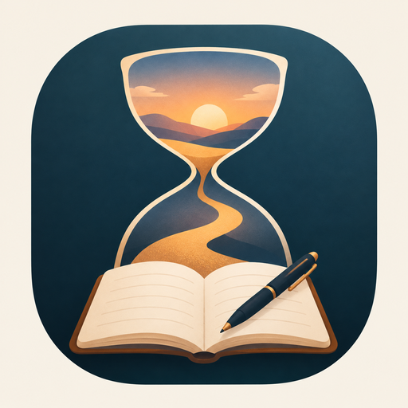

Journal
A private daily journal for Android, backed up to your own Google Drive.
Journal counts every year, month, day, hour, minute, second and millisecond since a moment that matters to you, and gives you a calendar from that day onward to write about each day.
Features
- Live time counter from your chosen start date and time.
- Day, week and month views of your calendar, with colours for days you've written about, days you haven't, today and the future.
- Voice typing that keeps listening through pauses until you tap Done, with automatic full stops and capitals. Words in other languages are kept exactly as spoken.
- Coloured tags to mark days, such as Travel or Leisure, plus your own.
- Back up to your own Google Drive, by tap and automatically once a day. Restore your journal on a new phone by signing in.
- One journal per Google account. Each person sees only their own.
Your privacy
Your journal stays on your phone and in a hidden folder of your own Google Drive that only Journal can use. There are no servers, ads or tracking, and we never see your entries.
Read the full Privacy Policy.
Get the app
Journal is available for Android 8.0 and newer. To get it, contact us at the address below.
Contact
Questions or feedback: straightfromfactoryapps@gmail.com
Journal is made by Haya-developer.